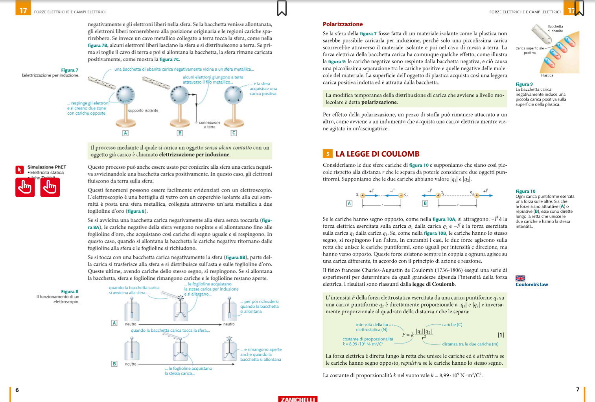
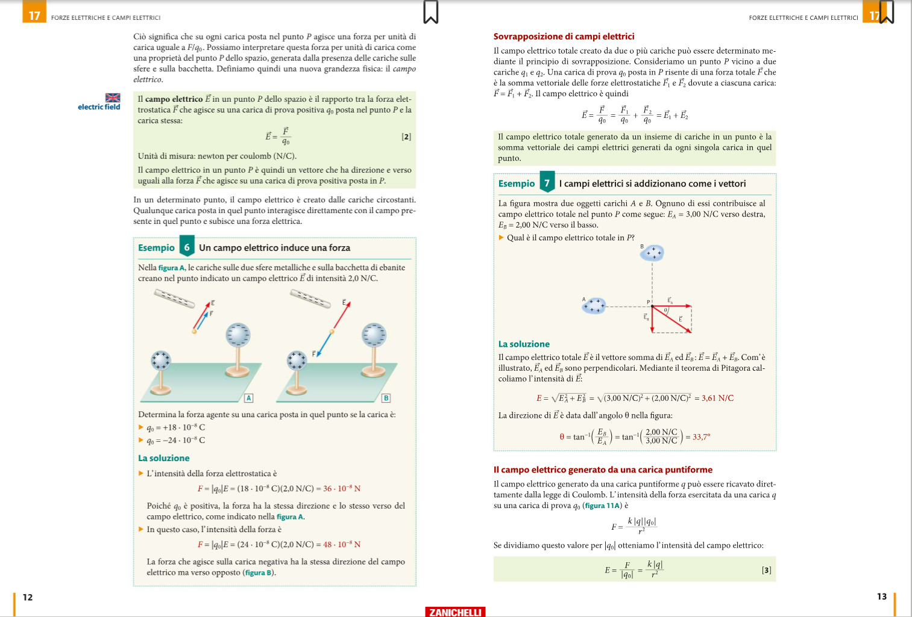
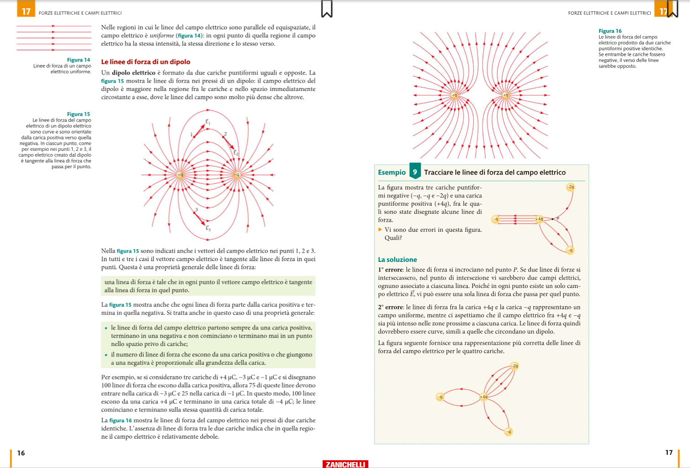
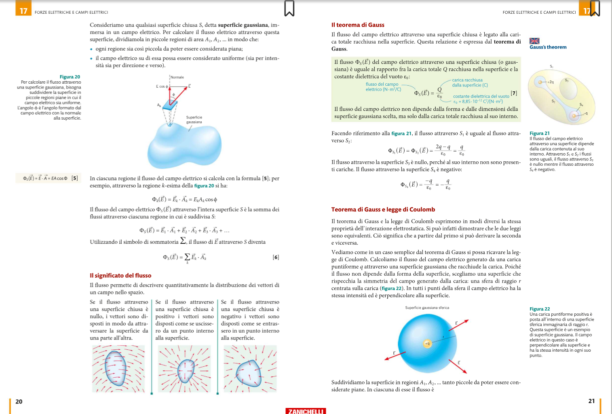
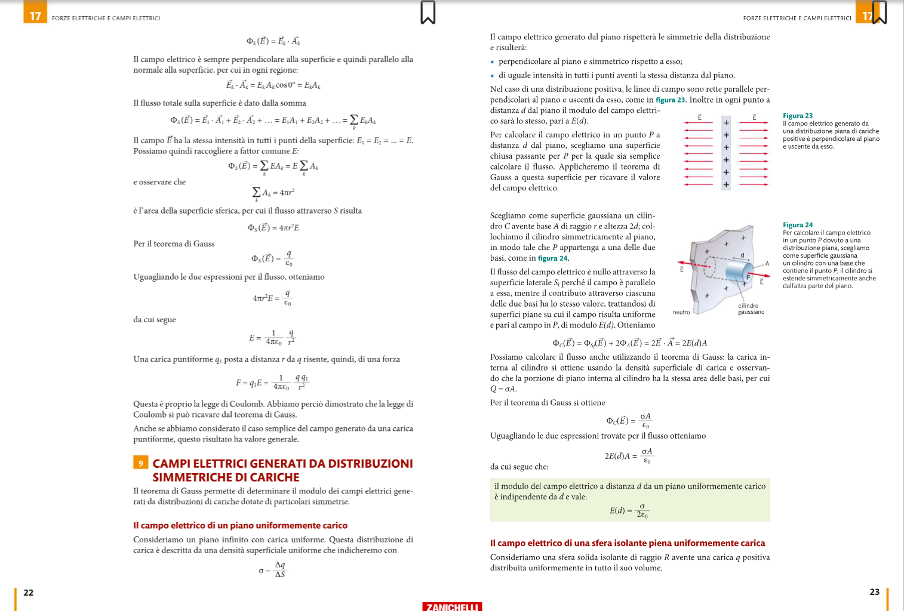
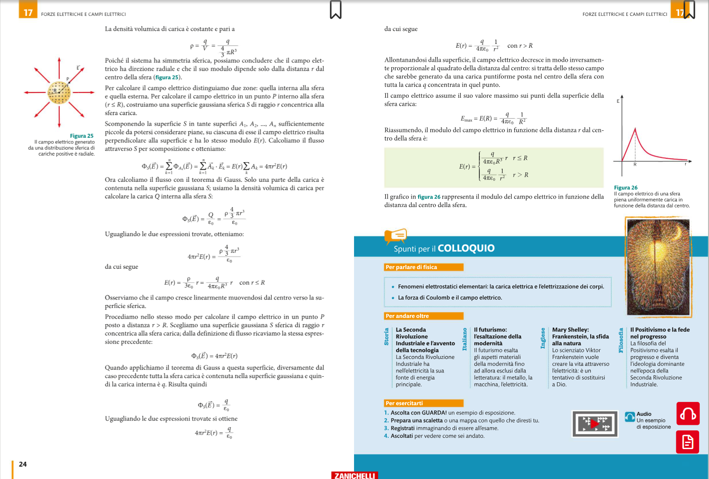
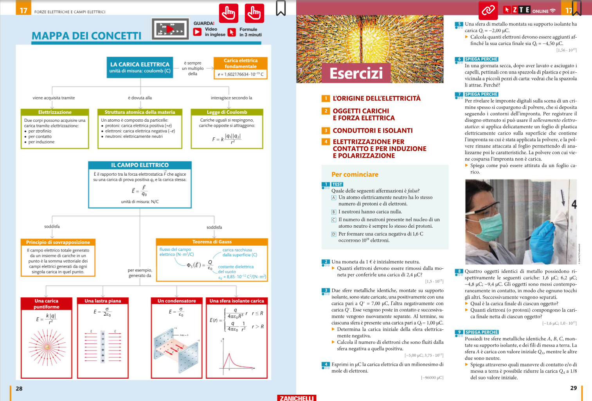
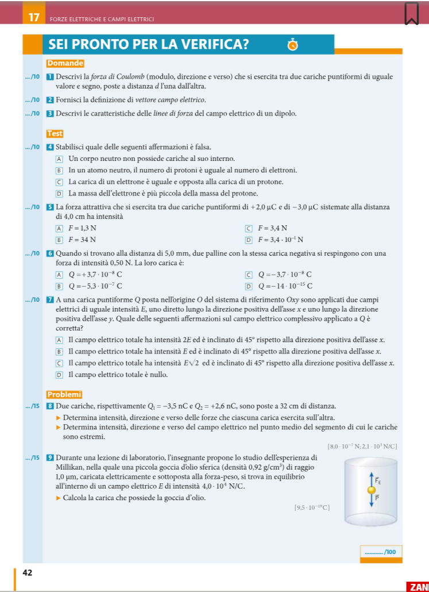

Liceo Monti di Chieri · anno scolastico 2026-27 · Fisica
UDA 1 · Forze elettriche e campi elettrici
5CLL · liceo linguistico · percorso LIM e schede studenti · edizione Cutnell corretta, capitolo 17, pp. 1–42
Domanda guida: come può una carica modificare lo spazio intorno a sé e produrre effetti anche senza contatto?
Prima osserviamo, poi diamo i nomi
Le due simulazioni sono il punto di partenza
In questa prima scheda non serve ancora conoscere le formule. Dobbiamo raccogliere indizi su trasferimento, redistribuzione, attrazione, repulsione, accumulo e scarica.
Per ogni prova compila tre frasi: Prima prevedo…, Durante osservo…, Per verificare la spiegazione potrei…
Regola di lavoro
Modifica una sola cosa alla volta.
Descrivi ciò che vedi senza interpretarlo subito.
Confronta l'esito con la previsione.
Formula una spiegazione provvisoria.
A · Palloncini ed elettricità statica
Prova nell'ordine: palloncino–maglione; palloncino–parete; due palloncini strofinati. Attiva la visualizzazione delle cariche solo dopo la prima previsione.
La simulazione verrà caricata qui solo quando premi il pulsante. È necessaria la connessione.
Discussione comune. Gli oggetti si muovono, ma quali particelle sembrano trasferirsi? Un corpo neutro può essere attratto? La carica scompare durante la scintilla oppure si trasferisce?
Controllo dopo la discussione
Nel modello dei palloncini gli elettroni passano dal maglione al palloncino; la parete resta complessivamente neutra ma si polarizza. Nel modello di John gli elettroni si accumulano e poi si trasferiscono rapidamente alla maniglia durante la scarica.
Libro: §§ 1–4, pp. 1–7
Carica, materia ed elettrizzazione
La materia contiene cariche positive e negative. Nelle comuni elettrizzazioni dei solidi si trasferiscono o si ridistribuiscono soprattutto gli elettroni; la carica totale di un sistema isolato si conserva.
La carica netta è un multiplo intero della carica elementare.
Attrazione e repulsione
Cariche dello stesso segno si respingono; cariche di segno opposto si attraggono. La sola attrazione non basta a dedurre i segni: un corpo neutro polarizzato può essere attratto.
Prima distinzione: materiali conduttori e materiali isolanti
La differenza non riguarda la presenza di cariche: tutta la materia contiene protoni ed elettroni. Cambia invece la possibilità delle cariche di spostarsi attraverso il materiale.
Conduttori: le cariche si redistribuiscono
In un conduttore alcune cariche sono libere di muoversi su distanze macroscopiche. Nei metalli sono soprattutto gli elettroni di conduzione; gli ioni positivi restano legati nel reticolo.
Se depositiamo carica in un punto, essa si redistribuisce rapidamente.
All'equilibrio elettrostatico, la carica in eccesso si trova sulla superficie esterna.
Se il conduttore è collegato alla Terra, elettroni possono entrare o uscire: la Terra funziona come un grande serbatoio di carica.
Esempi: metalli, grafite, corpo umano, acqua con sali disciolti.
Isolanti: le cariche restano localizzate
In un isolante le cariche sono legate agli atomi o alle molecole e non attraversano facilmente il materiale. Una carica depositata tende quindi a restare vicino alla zona in cui è stata trasferita.
Lo strofinio può lasciare cariche su una regione limitata della superficie.
Un campo esterno può spostare leggermente le cariche legate: il materiale si polarizza pur restando neutro nel complesso.
Umidità e impurità possono rendere più facile una lenta dispersione della carica.
Prevedi prima di proseguire. Tocchi nello stesso punto una sfera metallica su supporto isolante e una bacchetta di plastica, trasferendo a entrambe una piccola carica. Dove ti aspetti di ritrovare la carica poco dopo? Che cosa cambierebbe tenendo la sfera metallica direttamente in mano?
Confronta la previsione
Sulla sfera metallica la carica si redistribuisce sulla superficie esterna; sulla plastica resta soprattutto vicino alla zona toccata. Tenendo la sfera in mano, il corpo umano la collega di fatto alla Terra e la carica può disperdersi. Per caricare e conservare la carica su un conduttore occorre quindi isolarlo da terra.
In una frase. Nel conduttore le cariche mobili si spostano e si distribuiscono; nell'isolante le cariche trasferite restano localizzate, ma le cariche legate possono spostarsi di poco producendo polarizzazione.
Quattro processi da non confondere
Strofinio
Il contatto ripetuto favorisce il trasferimento di elettroni fra materiali diversi.
Contatto
Un conduttore carico tocca un altro oggetto e può trasferirgli carica.
Polarizzazione
Le cariche si separano leggermente all'interno di un corpo, che può restare neutro.
Induzione con terra
Un conduttore acquista carica netta senza toccare il corpo carico, grazie al passaggio di elettroni da o verso la Terra.
Animazione a passi · caricare senza toccare
La sfera contiene cariche positive e negative in equilibrio.
Esercizio guidato
C1 · Da carica a numero di elettroni
Un corpo ha carica \(Q=-3{,}2\,\mu\mathrm C\). Quanti elettroni possiede in eccesso?
Cutnell, capitolo 17, pp. 4–5. Osserva le figure 5 e 6.
Libro: § 5, pp. 7–10
Legge di Coulomb e sovrapposizione
La forza fra due cariche puntiformi dipende dal prodotto dei moduli delle cariche e dall'inverso del quadrato della loro distanza. La formula dà il modulo; i segni stabiliscono attrazione o repulsione.
Nome della legge: legge di Coulomb. Nome di \(k\): costante di Coulomb, cioè costante di proporzionalità nel vuoto.
Direzione
La retta che congiunge le due cariche.
Verso
Verso l'altra carica se l'interazione è attrattiva; in allontanamento se è repulsiva.
Terza legge di Newton
Le due forze hanno uguale modulo e versi opposti: \(\vec F_{12}=-\vec F_{21}\).
Sovrapposizione
Con più cariche: \(\vec F_{\mathrm{tot}}=\vec F_1+\vec F_2+\cdots\). La somma è vettoriale.
Curiosità · perché negli atomi la gravità è trascurabile? Nel modello dell'atomo di idrogeno, alla stessa distanza, l'interazione elettrica fra protone ed elettrone è circa \(10^{39}\) volte più intensa di quella gravitazionale. Su scala atomica domina quindi l'elettricità.
\(q_1=+2{,}0\,\mu\mathrm C\), \(q_2=-3{,}0\,\mu\mathrm C\), \(r=0{,}30\,\mathrm m\). Calcola modulo e tipo di interazione.
Converti le cariche in coulomb.
Calcola \(r^2\).
Sostituisci i moduli nella formula.
Usa i segni per stabilire il verso.
Soluzione
\(F=8{,}99\times10^9(2{,}0\times10^{-6})(3{,}0\times10^{-6})/(0{,}30)^2\simeq0{,}60\,\mathrm N\). I segni opposti indicano attrazione.
Apri il riferimento del libro · pp. 6–7

Cutnell, capitolo 17, pp. 6–7. La figura 10 distingue attrazione e repulsione.
Libro: § 6, pp. 11–14
Il campo elettrico
Il campo elettrico descrive come una carica sorgente modifica lo spazio. In un punto, il vettore \(\vec E\) è la forza per unità di carica positiva di prova.
Definizione operativa
\[\vec E=\frac{\vec F}{q_0}\qquad (q_0>0)\]
Unità SI: newton per coulomb, \(\mathrm{N/C}\).
Campo di una carica puntiforme
\[E=k\frac{|q|}{r^2}\]
Esce radialmente da una carica positiva ed entra radialmente in una carica negativa.
Distinzione essenziale. La carica sorgente crea il campo; la carica di prova sente la forza. Il campo in un punto non dipende dal valore della carica di prova, purché essa non alteri la distribuzione delle sorgenti.
\(E=(8{,}99\times10^9)(3{,}4\times10^{-9})/(0{,}22)^2\simeq6{,}3\times10^2\,\mathrm{N/C}\). Essendo \(q>0\), il campo è diretto radialmente verso l'esterno.
Apri il riferimento del libro · pp. 12–13

Cutnell, capitolo 17, pp. 12–13. Esempi 6 e 7.
Libro: § 7, pp. 15–18
Linee di forza del campo elettrico
Le linee di forza sono una rappresentazione del campo: la tangente dà la direzione di \(\vec E\), la freccia ne dà il verso e la densità delle linee suggerisce dove il campo è più intenso.
Regole
Escono dalle cariche positive.
Entrano nelle cariche negative.
Non si incrociano mai.
Il loro numero è proporzionale al modulo della carica.
Campo uniforme
Linee parallele, equispaziate e concordi: stessa intensità, direzione e verso in ogni punto della regione.
Dipolo
Due cariche uguali e opposte. Le linee partono dalla positiva e terminano sulla negativa; fra le cariche sono più dense.
Costruisci mentalmente il disegno
Per una carica positiva le linee sono radiali e uscenti.
Esercizio guidato
L1 · Trova i due errori
Uno schema mostra linee che si incrociano e lo stesso numero di linee termina su \(-q\) e su \(-2q\). Spiega i due errori e come correggerli.
Soluzione
Le linee non possono incrociarsi perché in un punto il campo ha una sola direzione. Sulla carica \(-2q\) deve terminare un numero di linee doppio rispetto a \(-q\), a parità di convenzione grafica.
Apri il riferimento del libro · pp. 16–17

Cutnell, capitolo 17, pp. 16–17. Figure 15 e 16, esempio 9.
Libro: § 8, pp. 19–20
Flusso del campo elettrico
Il flusso misura quanto il campo attraversa una superficie. Per una superficie piana in un campo uniforme conta la componente del campo perpendicolare alla superficie.
\[\Phi_S(\vec E)=\vec E\cdot\vec A=EA\cos\phi\]
\(\vec A\) è perpendicolare alla superficie; \(\phi\) è l'angolo tra \(\vec E\) e \(\vec A\). Unità: \(\mathrm{N\,m^2/C}\).
\(\phi=0^\circ\)
Flusso massimo positivo: il campo attraversa la superficie nel verso di \(\vec A\).
\(\phi=90^\circ\)
Flusso nullo: il campo è parallelo alla superficie.
\(\phi>90^\circ\)
Flusso negativo: il campo attraversa la superficie nel verso opposto a \(\vec A\).
Ruota la superficie
Esercizio guidato · libro p. 35 n. 38
F1 · Flusso massimo
Una superficie rettangolare \(0{,}16\,\mathrm m\times0{,}38\,\mathrm m\) è in un campo uniforme \(E=580\,\mathrm{N/C}\). Qual è il flusso massimo?
2 · Studia il flussodove \(E\) è costante o il contributo è nullo
3 · Trova \(Q_{\mathrm{int}}\)somma algebrica delle cariche racchiuse
4 · Applica Gaussricava il campo quando la simmetria lo consente
Carica puntiforme
Con superficie sferica: \(E(4\pi r^2)=q/\varepsilon_0\), quindi \(E=k|q|/r^2\).
Piano infinito carico
\(E=\sigma/(2\varepsilon_0)\): il modulo non dipende dalla distanza nel modello ideale.
Condensatore piano
Fra due armature opposte i campi si sommano: \(E=\sigma/\varepsilon_0\).
Sfera isolante uniforme
Dentro cresce linearmente con \(r\); fuori decresce come \(1/r^2\).
Attenzione. Il teorema di Gauss è sempre vero, ma permette di ricavare facilmente \(E\) solo quando la distribuzione di carica possiede sufficiente simmetria.
Esercizio guidato · libro p. 35 n. 39
G1 · Quale carica è racchiusa?
Calcola il flusso quando una superficie chiusa racchiude: a) \(+3{,}5\,\mu\mathrm C\); b) \(-2{,}3\,\mu\mathrm C\); c) entrambe.
Somma algebricamente le cariche interne.
Usa \(\Phi=Q_{\mathrm{int}}/\varepsilon_0\).
Interpreta il segno del flusso.
Soluzione
a) \(4{,}0\times10^5\,\mathrm{N\,m^2/C}\); b) \(-2{,}6\times10^5\,\mathrm{N\,m^2/C}\); c) \(1{,}4\times10^5\,\mathrm{N\,m^2/C}\), con arrotondamenti coerenti.
Apri il riferimento del libro · pp. 20–21

Cutnell, capitolo 17, pp. 20–21. Figure 20–22.Apri le applicazioni del libro · pp. 22–25


Cutnell, capitolo 17, pp. 22–25. Simmetria piana e sferica.
Memorizzazione attiva
Mappe e schemi riassuntivi
Mappa 1 · Dalle particelle all'interazione
Elettroni trasferitiun corpo acquista carica netta
Cariche sorgentimodificano lo spazio
Campo elettricoforza per unità di carica
Forza\(\vec F=q\vec E\)
Mappa 2 · Quale formula scelgo?
Quanti elettroni?
\(n=|Q|/e\)
carica ↔ particelle
Forza fra due cariche?
\(F=k|q_1q_2|/r^2\)
Coulomb
Campo in un punto?
\(\vec E=\vec F/q_0\) oppure \(E=k|q|/r^2\)
vettore
Flusso su superficie piana?
\(\Phi=EA\cos\phi\)
orientazione
Superficie chiusa?
\(\Phi=Q_{\mathrm{int}}/\varepsilon_0\)
Gauss
Mappa 3 · Errori da evitare
Neutro ≠ senza cariche
Le cariche positive e negative si compensano.
Modulo ≠ verso
La formula di Coulomb con i moduli dà \(F\ge0\); i segni dicono attrazione o repulsione.
Campo ≠ forza
Il campo appartiene al punto; la forza dipende anche dalla carica posta lì.
Flusso ≠ campo
Il flusso dipende anche da area e orientazione.
Gauss ≠ somma dei moduli
Serve la carica interna algebrica.
Apri la mappa del libro · pp. 28–29

Cutnell, capitolo 17, pp. 28–29. Usa la mappa per confrontare la tua sintesi.
Ripasso rapido · recupero attivo
Flashcard di teoria
Prova a rispondere ad alta voce prima di girare la carta. Segna come «da riprendere» solo quelle che richiedono ancora aiuto.
Carta 1 di 18 · Nessuna carta segnata.
Scheda operativa graduata
Esercizi: guidati → con suggerimenti → autonomi
Nome e cognome: ______________________________ Classe: __________ Data: __________
A · Carica ed elettrizzazione
Guidato
A1. Un corpo ha \(Q=+4{,}8\,\mu\mathrm C\). Determina il numero di elettroni rimossi. Passi: converti in C; calcola \(n=Q/e\); interpreta il segno.
Soluzione
\(n\simeq3{,}0\times10^{13}\) elettroni rimossi.
Solo suggerimenti
A2. Una sfera inizialmente neutra acquista \(-0{,}80\,\mu\mathrm C\). Quanti elettroni ha ricevuto?
Suggerimento
Usa il modulo della carica e dividi per \(e\). Il segno dice se gli elettroni sono arrivati o partiti.
Soluzione
\(5{,}0\times10^{12}\) elettroni ricevuti.
Da solo
A3. Quattro sfere metalliche identiche hanno cariche \(1{,}6\), \(6{,}2\), \(-4{,}8\), \(-9{,}4\,\mu\mathrm C\). Vengono messe contemporaneamente in contatto e poi separate. Trova la carica finale di ciascuna e il numero di elettroni in eccesso o difetto.
Soluzione
Carica totale \(-6{,}4\,\mu\mathrm C\); ciascuna sfera \(-1{,}6\,\mu\mathrm C\), pari a circa \(1{,}0\times10^{13}\) elettroni in eccesso.
B · Legge di Coulomb e sovrapposizione
Guidato
B1. Due cariche uguali \(q=370\,\mathrm{nC}\) devono respingersi con una forza uguale al peso di una massa di \(15\,\mathrm g\). Trova la distanza. Parti da \(kq^2/r^2=mg\) e isola \(r\).
Soluzione
\(r=\sqrt{kq^2/(mg)}\simeq9{,}2\,\mathrm{cm}\).
Solo suggerimenti
B2. Due cariche si attraggono con \(1{,}5\,\mathrm N\). La distanza diventa un nono di quella iniziale. Trova la nuova forza senza conoscere le cariche.
\(F'=81F=121{,}5\,\mathrm N\approx1{,}2\times10^2\,\mathrm N\), ancora attrattiva.
Da solo
B3. \(q_1=+3{,}0\,\mu\mathrm C\), \(q_2=-5{,}0\,\mu\mathrm C\), \(r=0{,}20\,\mathrm m\). Calcola modulo, direzione e verso delle due forze.
Soluzione
\(F\simeq3{,}4\,\mathrm N\); forze attrattive lungo la congiungente, uguali in modulo e opposte in verso.
C · Campo elettrico
Guidato
C1. In un punto il campo vale \(E=2{,}0\times10^3\,\mathrm{N/C}\) verso destra. Trova la forza su \(q=+14\,\mu\mathrm C\), poi su \(q=-14\,\mu\mathrm C\).
Soluzione
Modulo \(F=|q|E=2{,}8\times10^{-2}\,\mathrm N\). Per la positiva verso destra; per la negativa verso sinistra.
Solo suggerimenti
C2. \(q_1=8{,}5\,\mu\mathrm C\) è in \(x=3{,}0\,\mathrm{cm}\), \(q_2=-21\,\mu\mathrm C\) in \(x=9{,}0\,\mathrm{cm}\). Calcola \(\vec E\) nell'origine.
Suggerimento
Calcola separatamente i moduli. Nell'origine il campo della positiva punta a sinistra; quello della negativa punta a destra. Scegli destra come verso positivo.
Soluzione
\(E_x\simeq-6{,}2\times10^7\,\mathrm{N/C}\): verso sinistra.
Da solo
C3. Due cariche \(+4{,}0\,\mu\mathrm C\) e \(-4{,}0\,\mu\mathrm C\) si trovano rispettivamente in \(x=-0{,}20\,\mathrm m\) e \(x=+0{,}20\,\mathrm m\). Calcola il campo nel punto medio.
Soluzione
I due contributi puntano entrambi verso destra. Ciascuno vale \(8{,}99\times10^5\,\mathrm{N/C}\); quindi \(E_{tot}\simeq1{,}8\times10^6\,\mathrm{N/C}\) verso destra.
D · Linee di forza
Guidato
D1. Disegna otto linee per una carica positiva isolata. Segna le frecce e il vettore \(\vec E\) in un punto. Controlla: le linee devono essere radiali, uscenti e il vettore deve essere tangente.
Criteri di controllo
Le linee partono dalla carica positiva, si allontanano radialmente e non si incrociano; il vettore nel punto scelto è tangente e uscente.
Solo suggerimenti
D2. Disegna qualitativamente le linee per \(+2q\) e \(-q\). Spiega dove terminano le linee che non possono arrivare alla carica negativa.
Suggerimento
Il numero convenzionale di linee è proporzionale al modulo della carica. Il sistema ha carica totale positiva.
Criteri di controllo
Alla carica \(+2q\) si associano il doppio delle linee rispetto a \(-q\). Una metà termina su \(-q\); le altre proseguono verso l'infinito.
Da solo
D3. Rappresenta due cariche positive uguali. Indica la simmetria, descrivi il campo nel punto medio e spiega perché le linee non collegano le due cariche.
Criteri di controllo
La configurazione è simmetrica; nel punto medio i campi hanno stesso modulo e verso opposto, quindi il campo totale è nullo. Le linee escono da entrambe le cariche e non terminano su una carica positiva.
E · Flusso del campo elettrico
Guidato
E1. Una superficie di area \(0{,}40\,\mathrm{m^2}\) è in un campo di \(1300\,\mathrm{N/C}\); la normale forma \(60^\circ\) con il campo. Calcola il flusso.
Soluzione
\(\Phi=EA\cos60^\circ=260\,\mathrm{N\,m^2/C}\).
Solo suggerimenti
E2. \(E=600\,\mathrm{N/C}\), \(A=0{,}25\,\mathrm{m^2}\), \(\phi=120^\circ\). Calcola il flusso e interpreta il segno.
Suggerimento
Calcola prima \(EA\); poi ricorda che \(\cos120^\circ=-1/2\).
Soluzione
\(\Phi=-75\,\mathrm{N\,m^2/C}\). Il campo attraversa la superficie nel verso opposto al vettore area scelto.
Da solo
E3. Per una superficie piana il flusso vale metà del valore massimo positivo. Trova l'angolo \(\phi\) fra campo e vettore area nell'intervallo \(0^\circ\le\phi\le180^\circ\).
Soluzione
\(\cos\phi=1/2\), dunque \(\phi=60^\circ\).
F · Teorema di Gauss
Guidato
F1. Una carica \(+2{,}0\,\mathrm{nC}\) è al centro di un cubo. Trova il flusso totale e quello attraverso una faccia. Passi: usa Gauss per il totale; poi sfrutta la simmetria delle sei facce.
Soluzione
\(\Phi_{tot}=Q/\varepsilon_0\simeq226\,\mathrm{N\,m^2/C}\); una faccia: \(37{,}7\,\mathrm{N\,m^2/C}\).
Solo suggerimenti
F2. Una superficie chiusa racchiude \(+3{,}5\,\mu\mathrm C\) e \(-2{,}3\,\mu\mathrm C\); all'esterno c'è \(+8{,}0\,\mu\mathrm C\). Trova il flusso totale.
Suggerimento
Somma algebricamente soltanto le cariche interne. La carica esterna può modificare il campo locale, ma non il flusso netto attraverso la superficie chiusa.
F3 · Una scatola e sei misure. Considera come positivo il flusso che esce dalla scatola e come negativo quello che entra. Le sei facce hanno questi flussi, tutti espressi in \(\mathrm{N\,m^2/C}\):
Determina il valore e il segno della carica totale racchiusa nella scatola. Mostra il procedimento.
Soluzione ragionata
I contributi positivi danno 8300 e quelli negativi −10700. Il flusso totale è quindi \(\Phi_{tot}=-2400\,\mathrm{N\,m^2/C}\).
Dal teorema di Gauss ricaviamo \(Q=\varepsilon_0\Phi_{tot}\). Otteniamo \(Q\simeq-2{,}1\times10^{-8}\,\mathrm C\). Il segno negativo indica un eccesso di carica negativa dentro la scatola.
Allenamento misto · senza percorso suggerito
Preparazione alla verifica
Nome e cognome: ______________________________ Classe: __________ Data: __________
Strategia. Prima di calcolare, scrivi: grandezza richiesta, dati in SI, modello fisico, formula, direzione/verso, controllo dell'ordine di grandezza.
V1. Spiega perché un palloncino carico può aderire a una parete neutra senza violare la conservazione della carica.
Traccia
La parete si polarizza: le cariche più vicine di segno opposto esercitano un'attrazione maggiore delle repulsioni più lontane; la carica totale della parete può restare nulla.
V2. Ordina correttamente i passaggi dell'induzione con terra e spiega perché il collegamento a terra va rimosso prima della bacchetta.
Traccia
Avvicinare → collegare a terra → scollegare la terra → allontanare. Se la bacchetta viene allontanata mentre la terra è collegata, le cariche possono tornare e il corpo tende alla neutralità.
V3. Due cariche uguali raddoppiano entrambe; la distanza triplica. Di quale fattore cambia la forza?
Soluzione
Il prodotto delle cariche diventa 4 volte maggiore, \(r^2\) 9 volte maggiore: \(F'=4F/9\).
V4. Tre cariche sono su una retta: \(q_A=-4{,}0\,\mu\mathrm C\), \(q_B=+3{,}0\,\mu\mathrm C\), \(q_C=-7{,}0\,\mu\mathrm C\); \(AB=0{,}20\,\mathrm m\), \(BC=0{,}15\,\mathrm m\). Trova la forza risultante su \(q_B\).
Soluzione
\(F_{BA}=2{,}7\,\mathrm N\) a sinistra; \(F_{BC}=8{,}4\,\mathrm N\) a destra; risultante \(5{,}7\,\mathrm N\) a destra.
V5. Definisci il campo elettrico e spiega perché una carica negativa subisce una forza opposta a \(\vec E\).
Traccia
\(\vec E\) è la forza per unità di carica positiva di prova. Poiché \(\vec F=q\vec E\), con \(q<0\) il vettore forza cambia verso.
V6. Una carica \(-6{,}0\,\mathrm{nC}\) genera un campo in un punto distante \(0{,}25\,\mathrm m\). Trova modulo e verso.
Soluzione
\(E\simeq8{,}6\times10^2\,\mathrm{N/C}\), diretto verso la carica.
V7. Disegna un campo uniforme e un dipolo. In ciascun disegno marca un punto e traccia il vettore \(\vec E\).
Criteri
Nel campo uniforme le linee sono parallele ed equispaziate; nel dipolo vanno da + a −. In ogni punto \(\vec E\) è tangente alla linea.
V8. Un campo uniforme \(E=900\,\mathrm{N/C}\) attraversa una superficie \(A=0{,}30\,\mathrm{m^2}\). Calcola il flusso per \(\phi=0^\circ,60^\circ,90^\circ,180^\circ\).
Soluzione
\(+270,+135,0,-270\,\mathrm{N\,m^2/C}\).
V9. Una superficie chiusa racchiude \(+4{,}0\,\mathrm{nC}\) e \(-1{,}5\,\mathrm{nC}\); all'esterno c'è \(+20\,\mathrm{nC}\). Calcola il flusso totale.
Soluzione
Conta solo \(Q_{int}=+2{,}5\,\mathrm{nC}\): \(\Phi\simeq2{,}82\times10^2\,\mathrm{N\,m^2/C}\).
V10. Spiega perché il campo di un piano infinito uniformemente carico non dipende dalla distanza nel modello ideale, mentre quello di una carica puntiforme diminuisce come \(1/r^2\).
Traccia
Con una superficie gaussiana cilindrica il flusso attraversa due basi di area fissa e la carica racchiusa cresce con la stessa area; si ottiene \(E=\sigma/(2\varepsilon_0)\). Per una carica puntiforme il flusso si distribuisce su una sfera di area \(4\pi r^2\).
V11. Una goccia di massa \(3{,}8\times10^{-15}\,\mathrm{kg}\) resta sospesa in un campo verticale verso l'alto di \(4{,}0\times10^4\,\mathrm{N/C}\). Trova carica e segno.
Soluzione
Per equilibrare il peso la forza elettrica deve essere verso l'alto, quindi \(q>0\). \(q=mg/E\simeq9{,}3\times10^{-19}\,\mathrm C\).
V12. Costruisci una risposta di sei righe alla domanda guida dell'UDA usando correttamente: carica sorgente, campo, carica di prova, forza, linee, flusso.
Criteri
La risposta deve distinguere sorgente/campo/forza, citare \(\vec F=q\vec E\), interpretare le linee come rappresentazione e il flusso come attraversamento di una superficie.
Autovalutazione · adattata dalla p. 42
Sei pronto per la verifica?
Completa senza aprire formulario o soluzioni. Poi confronta e assegna a ogni voce un livello: 0 = non so partire; 1 = con aiuto; 2 = quasi autonomo; 3 = autonomo e so spiegare.
0 / 27
Compila l'autovalutazione per vedere quali nuclei riprendere.
Decisione finale
Dopo la compilazione comparirà un suggerimento di ripasso.
Apri la pagina originale · p. 42

Cutnell, capitolo 17, p. 42. Le domande sono usate qui come base per l'autovalutazione.Controllo sintetico delle nove voci
Lettura verbale. Prima individua la grandezza cercata. Poi porta i dati nel Sistema Internazionale. Scegli la relazione. Solo alla fine interpreta segno, direzione e verso.